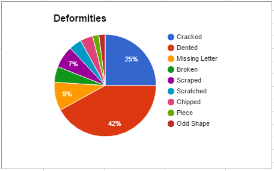
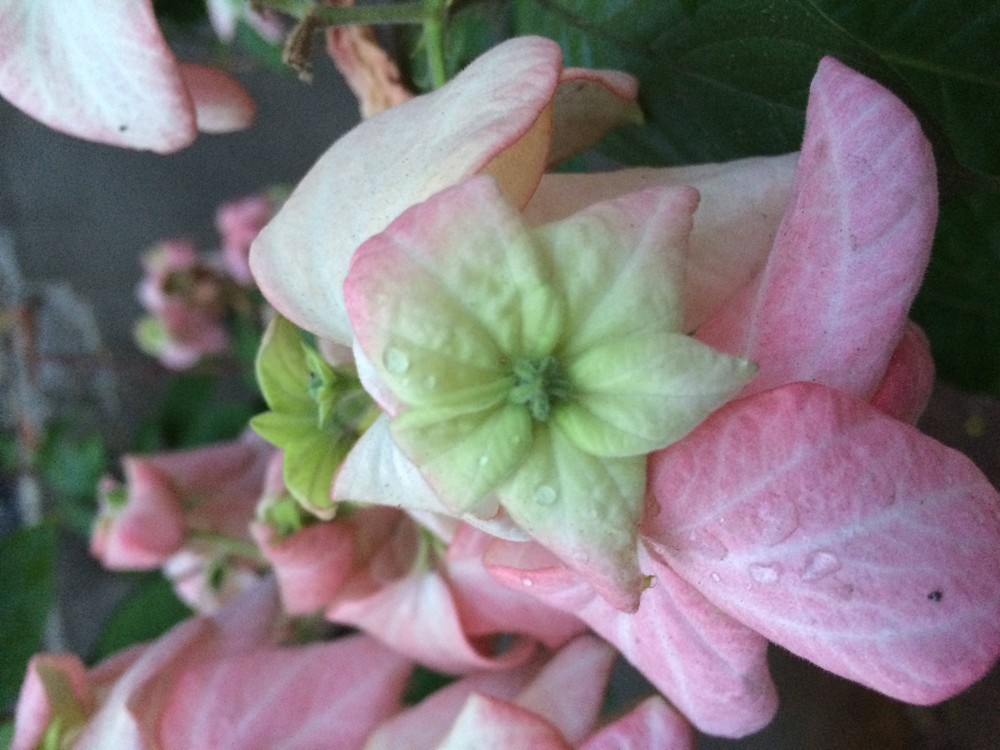
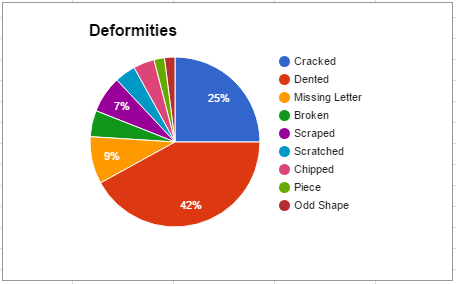
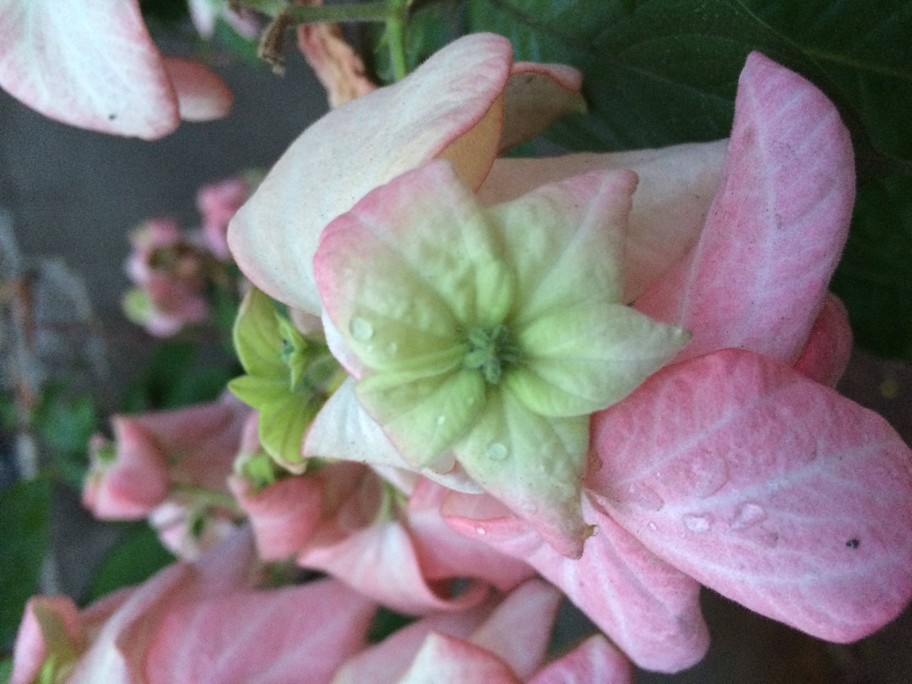
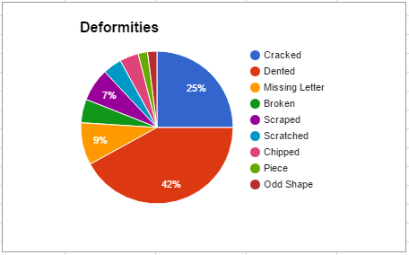
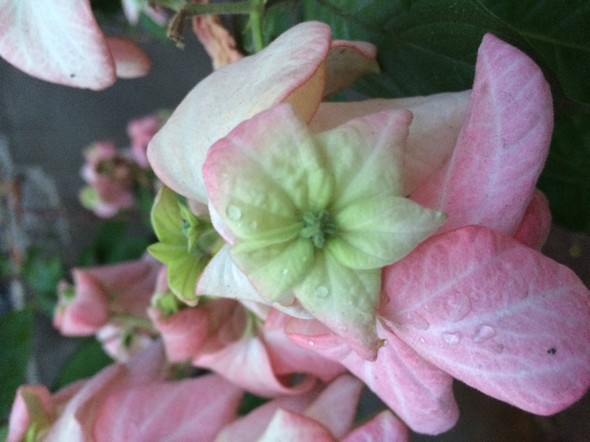

We collected data by first counting out how many of each color were deformed in a 2 lb bag of M&Ms. We then measured their mass to see how they compared to the average mass of an M&M. After that we went on a google sheet and recorded the color, the mass, and also the reason why it was deformed.
Some of the patterns we found were the deformed M&sMs were usually dented. Out of 100 deformed M&Ms 42 were dented while the second highest deformity was cracked, at 25% of M&Ms. We also found out that the average weight of unusual M&sM were 0.789g while the average weight of a regular M&M was 0.915g. Of all the colors we sampled we found that purple M&Ms had the most deformities, coming in at 27 out of 100. In second place blue and green are tied with 21 deformities each.

